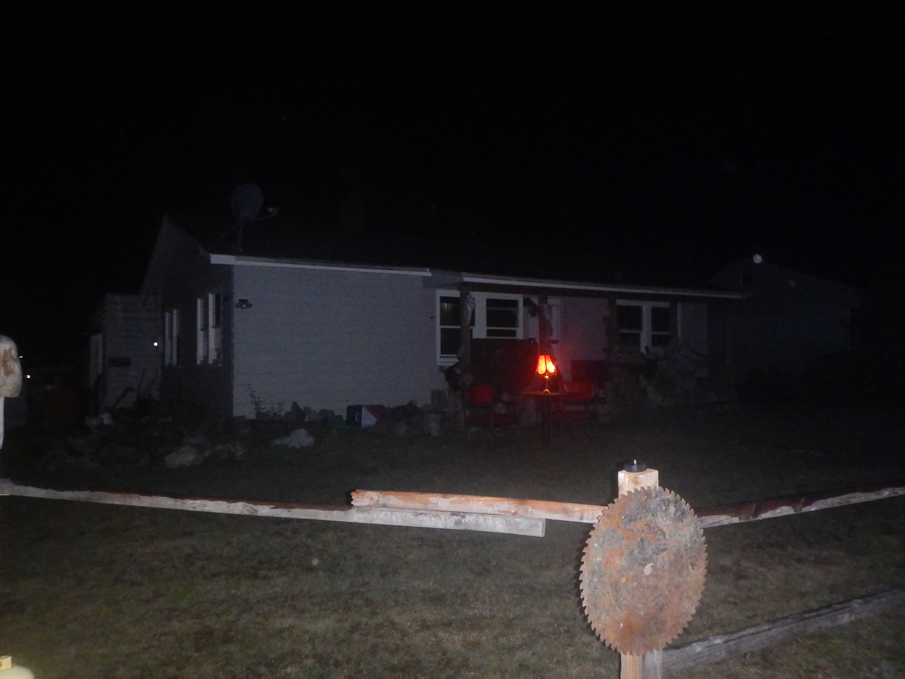
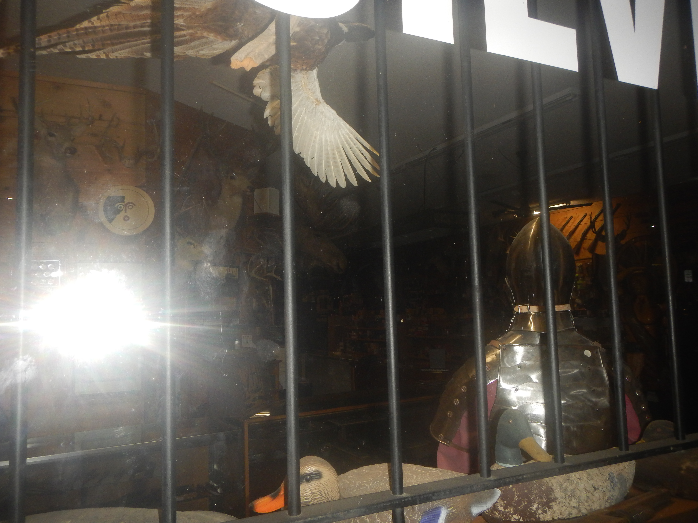
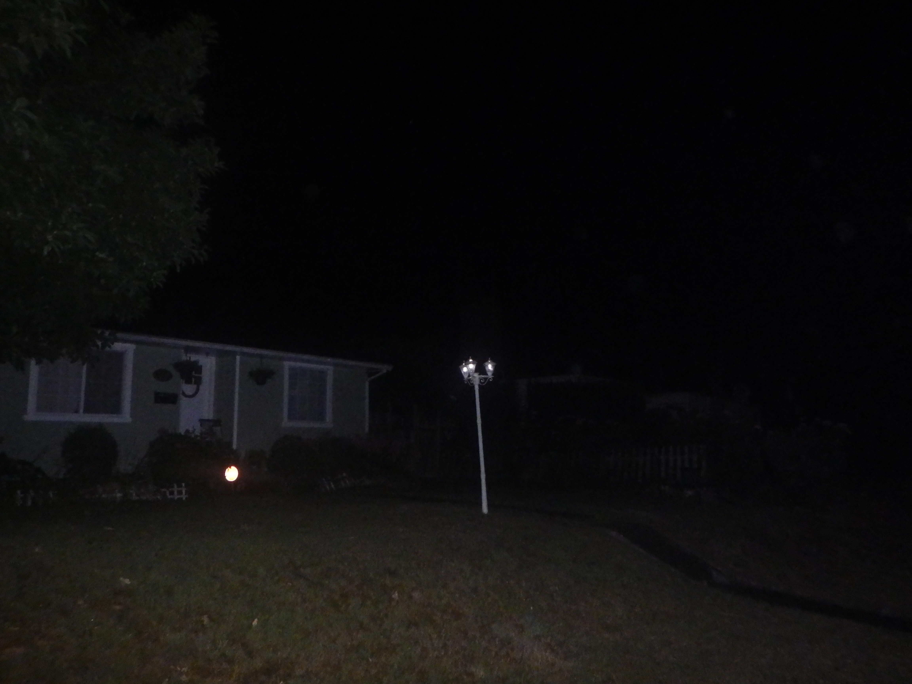
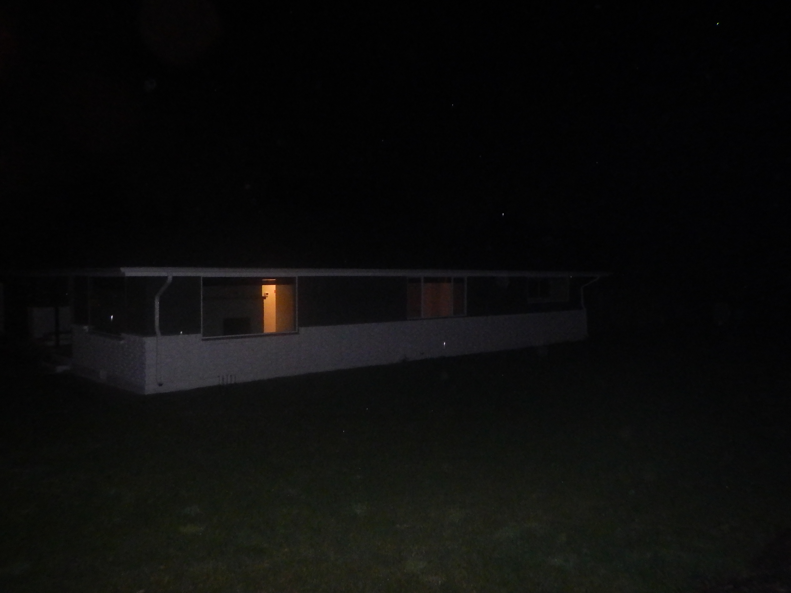

|
|
|
|
|
September 11. 2026
|




|
|
September 11. 2026
|
His Fixation
The murmur of a plane
lights the red bow of some ship,
emerging red-green and splitting
the middle crawls black,
what was the vision really?
He searched for the fabric to make it,
out of some tree or another,
there is no wood that polishes green,
he looks mistakenly out from sleep,
finding no one was watching.
|
|
September 11. 2026
|
I push my grandmother down a windowless hallway. Worse than a hospital, the walls have the tinge of concrete. Black streak marks appear in every
doorway. As I push her, my grandmother acts like she's walking, dipping her pink sneakers up and down as though into a puddle. She had asked to go outside, and the
'transman caregiver' my mom told me about comes to wrap a belt around her, hoisting her into the chair. My mom tells me that MM often thinks she's in a
basement, and will ask to go upstairs. It must be the dark hallway, reminding her of the basement of her old house. In the parking lot, I ask her where she'd like to go
-- down the
road or around the lake? She hesitates and I think she might not answer at all, then she says faintly, whichever is easier for you.
I realize that we cannot really go around the lake without wheeling her down a steep grass hill. The promise of the worn grass circling the edge
feels cruel to me, and the small loops we make in the parking lot, the lake still the same distance away it was from the porch. I wonder if what she really wants is
to be pushed through the grass, all the way to the cold edge of the water, to submerge her pink shoes.
When we go back my mother puts lotion on her arms and shins, the skin looks like paper at 95, as though it is barely there at all. When my mother leaves I
stand and she reaches out for me, hugging me to her. I can't tell by her questions if she thinks I'm me or my brother, but it's clear that she loves me. I smell
her hair and through this sense the moment is placed, backward and now.
I'm comforted as I leave that the trans guy comes out to take her inside, that her last days
will be spent with someone more like me than many others, more like me than even what she knew of me. They speak to her as you would a child, where are you
off to? but on the porch I saw a tear fall, and when my mother says it's nice in the sun,
she asks only, sun?
and is right, as we
are only under clouds.
|
|
|
|
|
|